CPU 的摩尔定律是不是因为 10 纳米的限制已经失效了？10 纳米之后怎么办？
2015-4-6
作者：薛矽
链接：http://www.zhihu.com/question/26446061/answer/43725522
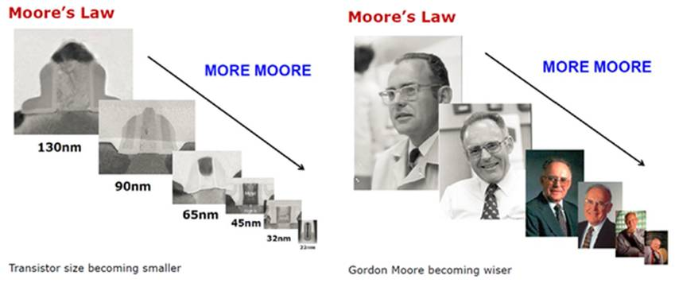- 从1958年Jack Kilby发明的第一个只包含一个双极性晶体管、三个电阻和一个电容的集成电路到现如今动辄十亿个晶体管的处理器芯片，短短五十几年的时间集成电路产业以历史上前所未有的节奏飞速发展。2014年，半导体生产商共生产制造了250 quintillion（十亿个十亿，十的18次方，短极差）个晶体管，也就是说去年一年中，平均每秒生产出8 trillion（短极差，万亿）个晶体管。
- 更重要的是作为目前人类最尖端的科技成果之一，各种各样的集成电路不停地升级降价、再升级再降价从而以相对低廉的价格让这项成果为普罗大众所共同享有。这一产业著名的经验法则摩尔定律也因此为大家所熟知。
- 曾听过一个不恰当的比方：如果汽车工业也是按照半导体产业的玩法，不妨想象一下您可以用多么低廉的价格购买到性能神到飞起的汽车。摩尔定律以平均每年46%的“成长”速率往前推进，而洲际旅行的速度从1900年大型远洋轮船的35公里每小时左右，上升至1958年波音707的885公里每小时，平均涨幅为每年5.6％。但在之后很长一段时间里巡航速度基本上保持不变，波音787只比707快了几个百分点。从1973年到2014年，美国新乘用车（即使在排除SUV和皮卡之后）的燃料转换效率每年仅提升2.5％，从13.5升到37英里每加仑（即油耗从17.4升每百公里降到6.4升每百公里）。
昨天给家里买电脑选什么奔腾赛扬的感觉还在眼前，今天新买到的手机上就已经是4核8核傻傻分不清楚了，这是多美好的时代啊！
但是现在问题来了，飞速的发展在看得到的未来就要触碰到物理极限了，10 纳米之后怎么办？！
先宽宽心，三星总裁在刚刚二月份的ISSCC上发表主题演讲表示：直到5nm不会有根本性困难。
那5nm之后怎么办？而即使是5nm以上的制程现在真的可以这么淡定？
下面从三个大的方面比较系统地来介绍下“怎么办”：
- “More Moore”、”“More than Moore”、“Beyond CMOS”
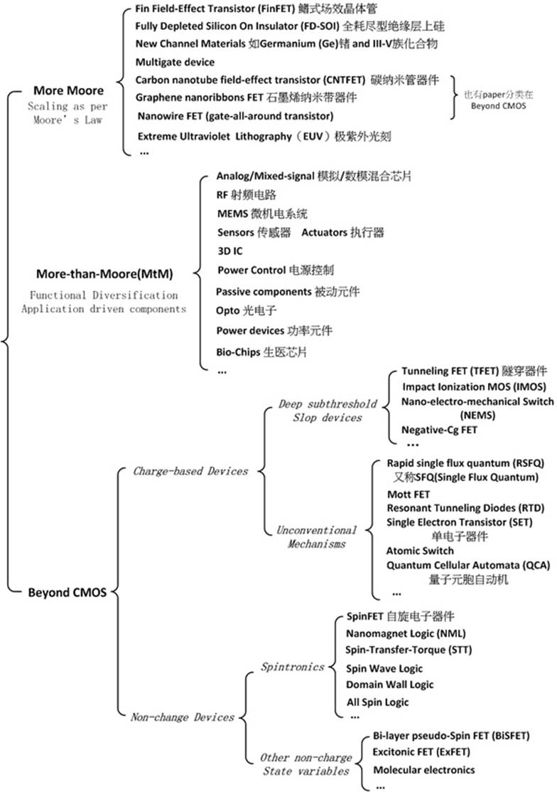
那为什么会这样分成三个大的方向？
用这张图就能更好的理解:
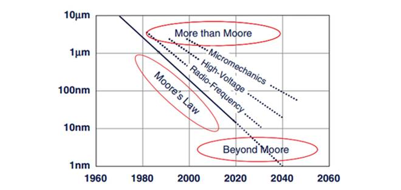
- “More Moore”做的是想办法沿着摩尔定律的道路继续往前推进。
- “More than Moore”做的是发展在之前摩尔定律演进过程中所未开发的部分。
- “Beyond CMOS”做的是发明在硅基CMOS遇到物理极限时所能倚重的新型器件。
一、More Moore
“More Moore”延续CMOS的整体思路，在器件结构、沟道材料、连接导线、高介质金属栅、架构系统、制造工艺等等方面进行创新研发，沿着摩尔定律一路scaling（每两年左右，晶体管的数目翻倍）。
有一个粗略的估算公式
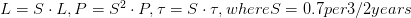
CMOS scaling rule：To enter the next generation node,
L是特征尺寸（就是22nm,14nm,10nm等等），P是相应的能耗，是传播延时。通过这个公式可以大致推出之后几代制程的性能参数和Roadmap（roadmap就是大致哪一年做到22nm，哪一年做到10nm，哪一年做到7nm的规划，如下图）。
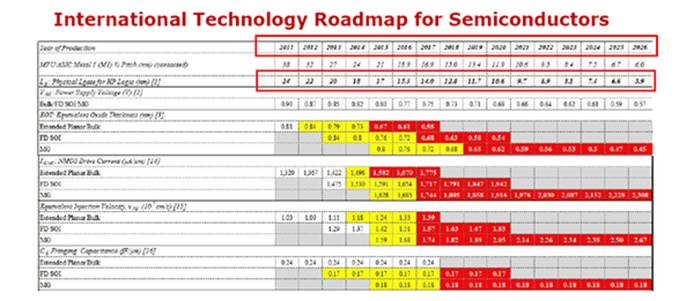
关于这部分内容，上面 @华思通和 @吴恒 写得很好，还有 @段阡 学长在另一个问题下的回答也很棒如果芯片工艺发展不能满足摩尔定律，是否会引发 IT 界的一场创新？ - 芯片（集成电路），请大家参考。
“More Moore”的挑战在于：
- 无法承受的能耗密度
- 原子尺度的尺寸——物理限制
- 制程、器件的不稳定性和偏差
- 比例缩小并没有带来实质的性能提升（每次乘0.7或，后面得到的值之间的差越来越小）
- 高昂的研发和制造成本
二、More than Moore
“More than Moore”侧重于功能的多样化，是由应用需求驱动的。之前集成电路产业一直延续摩尔定律而飞速发展，满足了同时期人们对计算、存储的渴望与需求。大众一提到芯片想到的就是CPU、显卡、英特尔、英伟达、高通，也可能会觉得德州仪器这样名字的“山东某设备制造“公司应该和芯片没什么关系吧（纯吐槽）。
但是这个世界不是光光只有处理器啊！像下图所示，一个系统（比如您的手机芯片组）还有很多其他部分的功能模块，这些橙色的部分还大有文章可做。
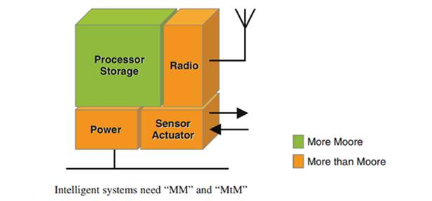
- 首先，像上上张有横纵坐标的图所显示的那样，摩尔定律（主要是数字电路和存储电路）切下了版图的一角却也留下了很大一块的空白。那些“空白”部分（比如模电以及后来兴起的微机电等等）并不是把MOS FET作为单纯的开关来用，也因此和数字电路不停地scaling的玩法不同，当这边看上去快要玩完的时候那边说不定还想大干一场呢。
- 其次，这些非数字的功能模块还有不少停留在PCB板级系统层面，还有很大的空间和潜力用比如3D IC等的技术向封装层面（System in a Package(SiP)） 或是单芯片层面(System on a chip（SoC)）发展。
更直观地理解更高集成度的好处可以参考最新发布的MacBook的主板：
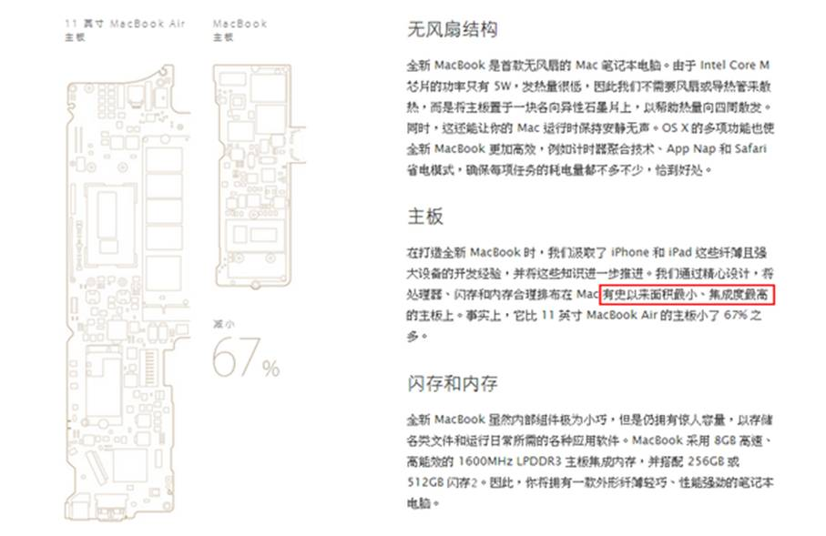
- 最后，也是最重要的，随着时代的发展，人们对物联网、生医电子等等产业的期待和需求越来越大，也就是说，消费者除了对计算、存储功能还对传输、感测、智能化等功能的要求越来越高。
这意味着什么，这意味着商机啊，意味着大笔大笔的钱啊。
比如
- THz IC：现在大家常讲的几G几G，Tera是Giga的一千倍啊，是不是很快！
- Wireless power transmission：无线充电啊，其实现在IC级的无线充电从工业界商用的角度来讲效率还不算高，传输距离也还有很大的限制，还有很大的发展空间啊， 如果一款手机只要在有类似WiFi的地方就能自己充电你是不是会马上冲出去买买买！
- Power converter for energy harvesting：不仅无线充电啊，芯片还能自己从周围环境吸收能量啊， 是不是吊炸天！
- 生医电子就不用讲了，神马吹口气就能测癌症的芯片啦、一滴血就能检艾滋的芯片啦、会放电刺激你大脑的芯片啦、能在你血管里游来游去的微机电啦！（这方面还有很多很有意思的生医芯片，有机会再在知乎上给大家详细介绍）
等等等，这些例子都不是科幻想象，都是有被具体流片实现验证的呐！但是为毛我作为消费者还没有接触到！炸裂！
因为啊，相对来说，这些技术或者还不够成熟、或者制造成本过高、或者仍不适合大量生产，还有很大的开发空间，还需要很大的研发投入。所以，业界学界就有很多人提出，别整天快到头啦快到头了的，我们来玩More than Moore好不好，我们继续赚大钱好不好（切，大钱怎么会给你们硬件挣，都在人家互联网公司好不好（纯吐槽，羡慕嫉妒没有恨））。
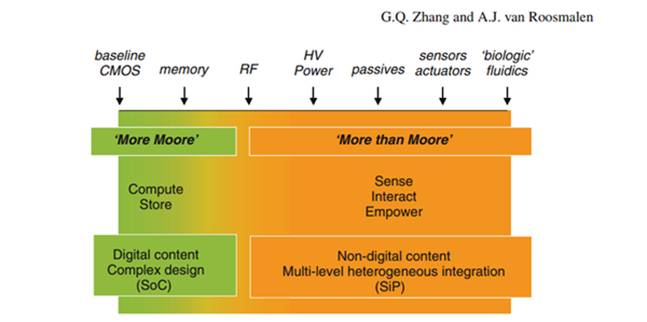
上面介绍的“More than Moore”其实和去年台积电张忠谋董事长就“下一个发展”所发表的观点是一致的。
张忠谋说，摩尔定律分析，半导体经过数十年的发展就差不多“要死了”，就算还可以苟延残喘个5、6年，难道接下来就没有事情做了吗？
为半导体产业把脉，张忠谋提出3个发展方向，
- 首先摩尔定律下包括射频、输入输出控制等不需要高阶制程的产品可以放在同一封装上，另外发展高阶技术的产品，能将相同制程的不同产品一起封装的先进封装技术，让一颗芯片能整合更多功能，更可以节省空间。
- 第二，物联网有机会用到不同的传感器，去执行测量温度、侦测环境、感应人体血压等功能，半导体公司也要必须跟上脚步，掌握这些技术。
- 最后，他认为未来的产品须要更佳的低功耗功能，甚至功耗要求比智能手机低10倍，最好一周只充一次电，这技术也将是半导体公司须要突破的。
三、Beyond CMOS
(友情提示，以下部分适合吹水，(有些方向)毕业&找工&投资有风险，跳坑需谨慎)
那如果"More Moore"哪天真的折腾不下去了，难道就坐等CMOS到头，赚赚"More than Moore"的钱算啦?当然不会。作为无论研发投入总量还是占收入比都是最高的几个行业之一，业界众公司比如Intel，2014年115.37亿美元的研发经费投入都有在布局不远的以及遥远的将来。
搜索Ian A. Young、Dmitri Nikonov、Kelin J. Kuhn这些Intel的科学家，您就会发现他们正在研究一些相当炫酷的东西。
这个领域里还有一位清华出身耶鲁的PhD毕业，现在就职于GLOBALFOUNDRIES的科学家
An Chen，他在这个方面有很多研究，也是GLOBALFOUNDRIES在International Technology Roadmap of Semiconductors (ITRS)的代表，主持ITRS中the Emerging Research Device (ERD) working group的工作。15年有编一本新书：《Emerging Nanoelectronic Devices: An Chen, James Hutchby, Victor Zhirnov, George Bourianoff: 9781118447741: Amazon.com: Books》。
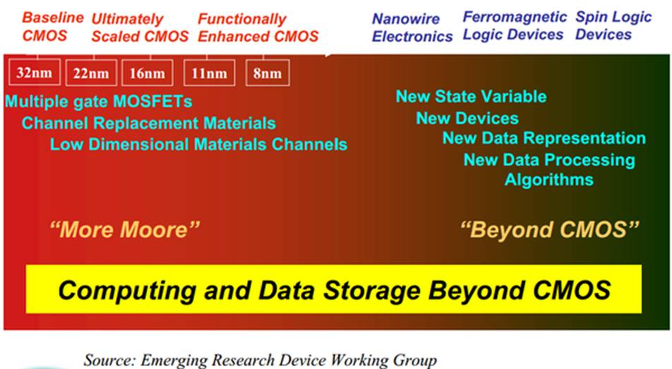
Beyond CMOS的主要思路就是发明制造一种或几种“新型的开关”来处理信息，以此来继续CMOS未能完成之事。因此理想的这类器件需要具有高功能密度、更高的性能提升、更低的能耗、可接受的制造成本、足够稳定以及适合大规模制造等等的特性。
据说知乎爆照会比较多赞，就先po一张（比较全的）玉照。
下面的综述表格适合想深入了解或是做这方面研究的知友：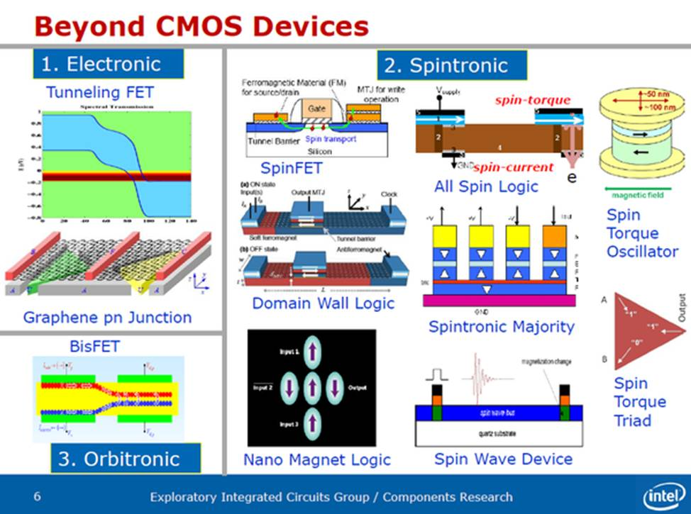下面的综述表格适合想深入了解或是做这方面研究的知友：
接下来介绍一些具体的Beyond CMOS的新型器件。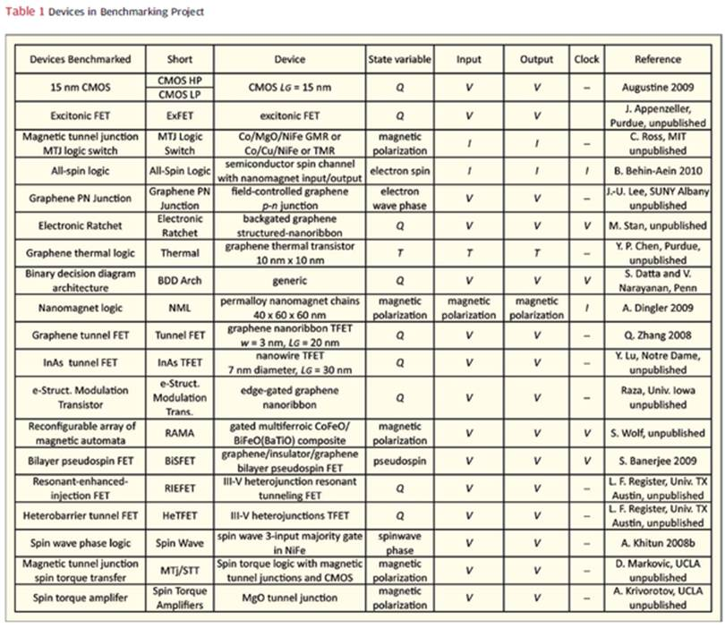
1.Tunneling FET (TFET)
TFET 主要应用量子力学的隧穿原理，直接穿越source和drain间的屏障而不是扩散过去。
TFET 主要应用量子力学的隧穿原理，直接穿越source和drain间的屏障而不是扩散过去。
优势：
- 实现低Vdd（电源电压）、低功耗以及更好的次临界摆幅
- 与CMOS工艺兼容
挑战：
- 低饱和电流
- 提高对内部电场的栅极电压控制度有难度
- 界面态的问题（在传送和接收端都需要足够高界面密度来为载子提供能量充足的位置）
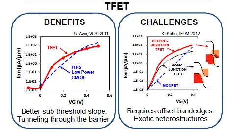2.Nano-electro-mechanical Switch (NEMS)
MEMS的进阶版，用上图所示的悬梁臂来做为机械开关。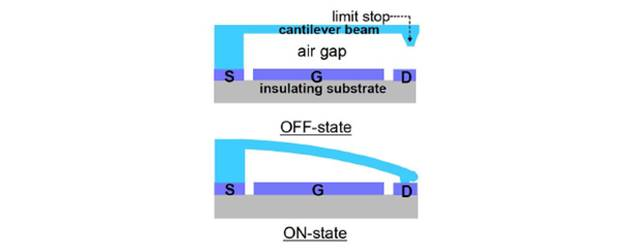MEMS的进阶版，用上图所示的悬梁臂来做为机械开关。
优势：
- 理论上可以做到为零的泄漏电流和亚阈值摆幅
- 对温度的敏感度低
- 对电磁冲击免疫
- 与CMOS工艺兼容
挑战：
- 由于悬梁臂的机械动作带来较低的开启关闭速度
- 纳米级接触的可靠性
- 表面力产生的突刺
- 受到隧穿效应限制的比例缩放
- 高吸和电压
3.Single Electron Transistor (SET)
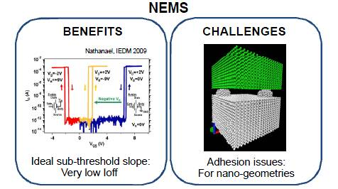
栅端电压控制稳定状态间的调谐，实现“岛”上单一电子的增或减。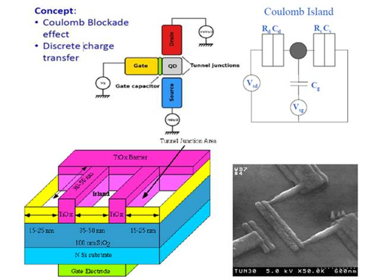
栅端电压控制稳定状态间的调谐，实现“岛”上单一电子的增或减。
优势：
- 高速
- 高器件密度
- 高能效
- 可能带来新奇的功能和应用
- 与CMOS工艺兼容
挑战：
- 尺寸与温度的权衡
- 低增益
- 较大的阈值电压变化
- 寄生电容
- 低输出电流、高输出阻抗
- 有限的扇出数
- 较低的抗噪声能力
- 尚未完全成熟的制造工艺
4.Quantum Cellular Automata (QCA)量子元胞自动机
通过改变元胞编排结构来表示二进制。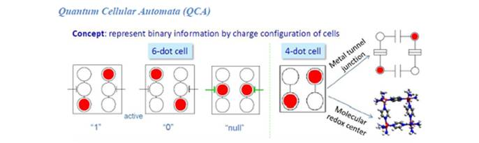
相邻的元胞由于库仑耦合效应趋向于对齐一致，从而实现信息的传递。
已有通过实验演示的半导体、分子、磁性点类型的量子元胞自动机提供了低功耗，新型信息处理方式、传输机制，以及多数决操作。
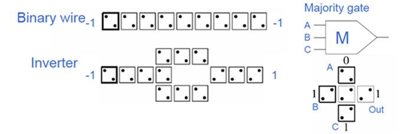
QCA 量子电路是未来实现量子计算机的技术之一。
挑战：
- 工作温度的限制
- 在极端尺寸下的图形构造
5.Atomic Switch
原子开关基于两电极间的金属原子桥的形成与湮灭，从而形成门（相当于栅极）控开关模式。
原子开关基于两电极间的金属原子桥的形成与湮灭，从而形成门（相当于栅极）控开关模式。
优势：
- 高扩展性
- 低操作电压和能耗
- 作为记忆体的双端器件应用时，与conductive-bridge RAM (CBRAM)类似
- 相对来说存在低制造成本的可能性
- 3D堆叠结构
挑战：
- 需要提高三端器件所具有的性能（速度、耐久度、均匀度）
- 稳定性和高可变性需要被考量
- 速度由电极活性表面的离子输运和电化学反应决定
- 需要对工作机制有更深入的了解
6.SpinFET
利用电子的自旋方向来携带信息。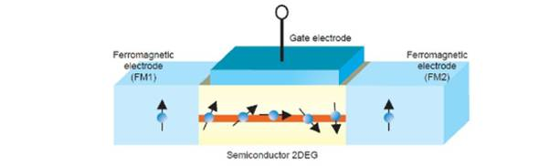
利用电子的自旋方向来携带信息。
相关技术也是未来实现量子计算机的技术之一。
优势：
- 旋转的自由度使额外的信号调制和控制成为可能
- 具有场效应晶体管的结构且与CMOS工艺兼容
- 理论上有更小的传输耗散
- 无挥发性
- 可编程性
挑战：
- 磁性材料及其制造工艺
- 需要高效率的自旋注入和侦测来实现足够多的开/关比例
- 自旋轨道间的栅极调制的强度
- 自旋弛豫及其寿命
7.Graphene FET 石墨烯FET
2D材料，蜂窝状的单原子碳结构。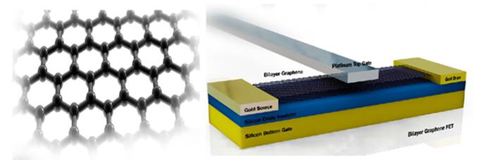
2D材料，蜂窝状的单原子碳结构。
优势：
- 高迁移率（有构造更快速FET的潜力）
挑战：
- 现有的研究都没有实现电流饱和gds高内在的电压增益<0.4带有电压增益的电路结构难以实现
- 石墨烯没有带隙（band gap）
- 开/关电流比欠佳不理想的开关
石墨烯材料的最重要的缺陷就是缺少带隙，所以这方面也有各种各样的研究尝试。
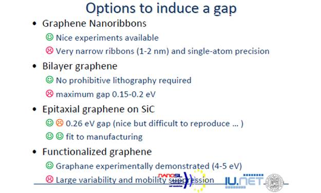
8.Carbon Nanotube FET
CNT是由石墨烯薄片卷起来的纳米级直径的圆管。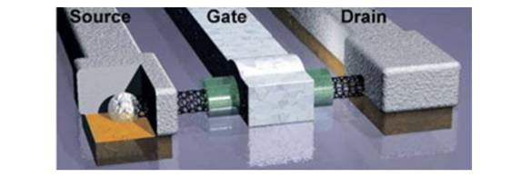
优势：
- 在RF电路中的应用较有前景
- 在表面的一维输运 可实现极佳的沟道控制和高线性度（Id ~ Vgs）
- 由于较大的平均自由程CNT有地热噪声以及操作在THz频率的潜力
挑战：
- 现有实现的高性能CNT内是有金属喷镀的，需要设法摆脱
- 一个碳纳米管只能承载10至30 μA的电流，因此需要几百个碳纳米管来达到mA级别的漏端电流
- 已有的CNT FET amplifier with 11 dB gain at 1.3 GHz
- 大规模制造工艺仍有待发展
碳纳米管更具体的方面知乎上有 @吴恒 的优质答案可供参考碳纳米管会代替传统硅材料成为更优质的计算机电子元件材料吗，现在大规模应用的阻碍是什么？ - 吴恒的回答
9.Nanowire FET
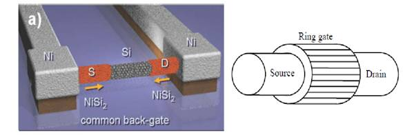
优势：
- 相比CMOS，对载子/沟道有更好的控制
- 当直径很小（几个纳米）时，有一维（弹道）的传输效果
- 相比CMOS有大约4倍的速度提升
- 环形栅在高速器件中很有前景
挑战：
- 可靠度和器件的可复制性
- 达到mA级别的电流需要很多单一器件的排列
- 仍未有RF应用的实现
Beyond CMOS部分引用前文提到的华人科学家An Chen已发表的论文结论做一个小结：
根据时间上的状态变量和开关装置做的分类：
ITRS ERD组基于评价和调查，对上述三大类新型逻辑器件在比例缩小能力、速度、能效、开关（1/0）比、操作可靠性、室温下性能、CMOS工艺兼容性等方面的归一化评估：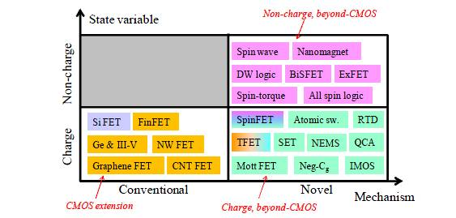ITRS ERD组基于评价和调查，对上述三大类新型逻辑器件在比例缩小能力、速度、能效、开关（1/0）比、操作可靠性、室温下性能、CMOS工艺兼容性等方面的归一化评估：
简单地说单一射线上的数值越大越好，最终所包围的面积越大越好。
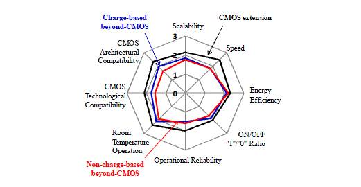
全文最后用ITRS（国际半导体技术蓝图）公布的一份报告中的图片作为总结。
注意看左右两条长直线和中间的五个大层面。
偏左边是已有的成熟技术，偏右边是新型的信息制程技术。
- 最下层的状态变量有从电子电荷向分子、极化、强电子相关态、自旋方向等方向发展的趋势。
- 第二层材料方面有从硅、碳、宏观分子材料、纳米结构、复合金属氧化物等方向发展的趋势。
- 第三层的器件结构层级有从CMOS向分子器件、自旋器件、铁磁性器件、量子器件等方向发展的趋势。
- 第四层的数据载体有从模拟量、数字量像模式量、量子位等方向发展的趋势。
- 第五层的计算机架构有从冯诺·依曼架构、多核架构向可重构、量子、形态学计算机等方向发展的趋势。
另附上2002年一篇paper的几张综述图表给有兴趣想继续深入了解的知友。（而且有包含前文没有介绍的Memory的部分)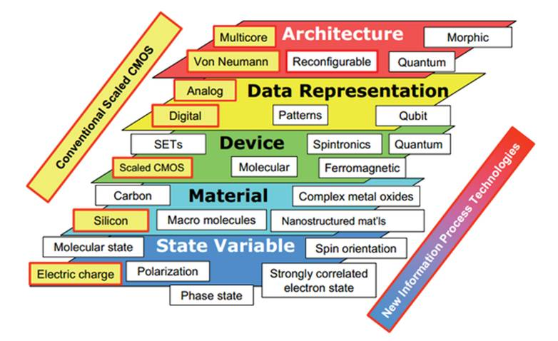
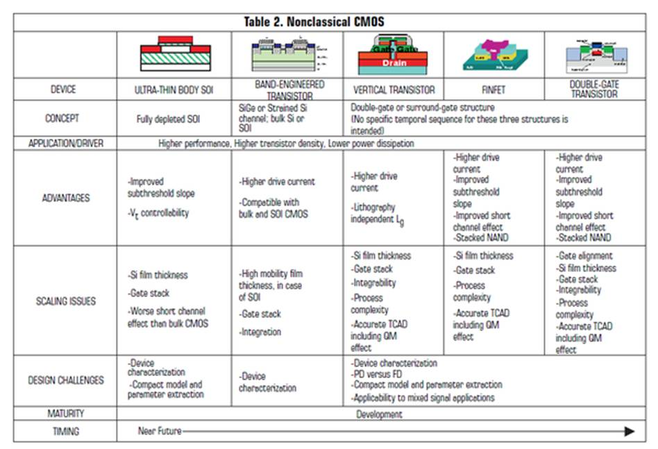 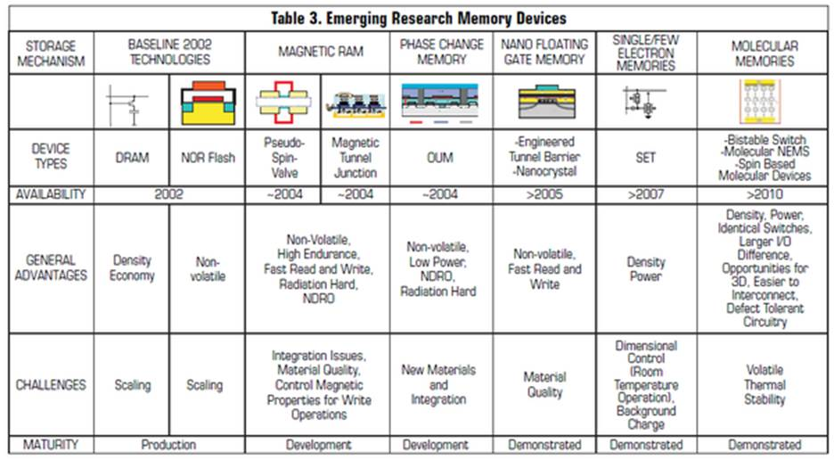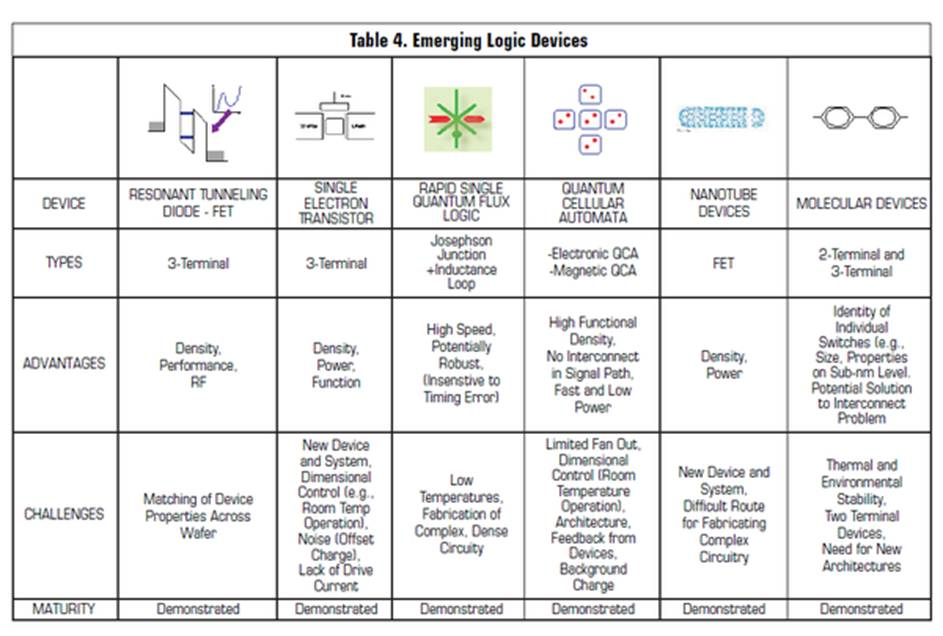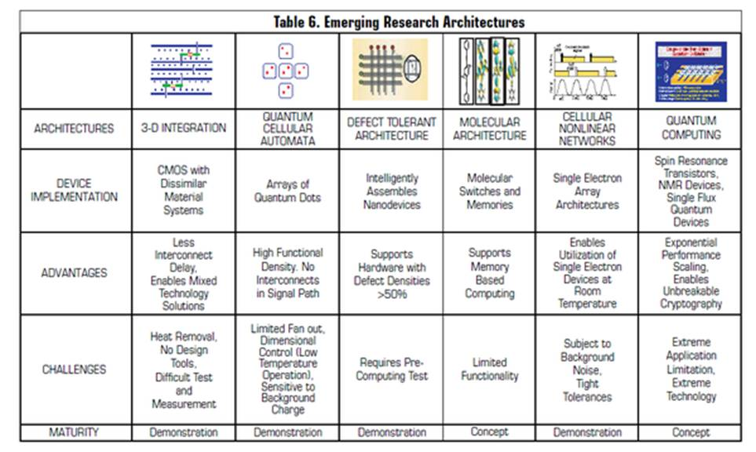
以上全文中非原创图片均来自公开的互联网，如有侵权立刻删除。
部分个人论述非学术结论，仅供参考，如有错误敬请指正。
专业名词翻译可能有误或和大陆常用词不同，敬请指正，有些实在无法翻译，还请见谅。
4-24更新——IEEE Spectrum做了一个关于摩尔定律50周年的专题（仍在更新中）：
Special Report: 50 Years of Moore's Law
甚至有采访到Gordon Moore本人以及超大规模集成电路(VLSI)的祖师爷Carver Mead（他是摩尔定律的命名者；我在另一个回答有提到，他也是神经形态计算机之父 IBM 发布新型 SyNAPSE 神经芯片，会对整个计算机乃至科技领域产生什么影响？ - 薛矽的回答）。
引自科技中国「卡弗·米德」词条 http://www.techcn.com.cn/index.php?doc-view-134697.html
摩尔先生在1965年提出定律时就在《电子》（Electronics）杂志中就表明了这一观点，现已 73 岁高龄的他对此仍深信不疑。他表示：“我愿意对摩尔定律的任何问题进行担保。”
该定律最初只是摩尔先生做出的一个简单推测，主要探讨了新兴芯片行业多快可以在单一集成电路中容纳更多元件的发展周期。加利福尼亚理工学院着名物理学家米德（Carver Mead）后来将其称为摩尔定律，他认为“它更是一种个人预言，而非仅仅是定律”。
Moira Gunn：你早在1965年便撰写了那篇具有开创性的文章，并且你能从中看到摩尔定律的所有苗头，但直到你在英特尔工作达10年之久后，你的发现才被称为摩尔定律。根据你的回忆，第一次出现摩尔定律的名称是什么时候？
戈登·摩尔博士：对这一点最了解的是我的一个朋友Carver Mead，当时他是加州理工大学教授，是他把我的发现称作摩尔定律。不知怎么的这一名称就流传下来了。几十年来，我甚至不愿使用这一说法，但最终我还是习惯了这个名称。
这里简单翻译一些这次IEEE Spectrum专访中的有意思的对话片段（只是大意，全文请移步原文链接）：
...
- Rachel Courtland（IEEE Spectrum副主编）:您在过去曾多次预测摩尔定律的终结，您现在认为它还能持续多久？
- Gordon Moore: 恩，我从来没有准确的预测它的终结，我说过我无法看到比下一个世代（的芯片）更远的未来。那儿似乎有一堵穿不透的墙，但这堵墙一直在往后退。我很惊讶于工程师们有如此强大的创造力能够在看起来只能完全停滞的情况下找到新的出路。...我记得一次霍金在硅谷的时候，有人问他怎么看集成电路技术所面临的极限。虽然不是他的研究领域，但他总结了两点：光的有限速度和材料的原子特性。我觉得他是对的。我们已经接近原子极限，而且我们也利用了一切优势来促使速度提升，但是光速会最终限制性能。这些基本的问题目前看来依然没有很好的解决方案，而在接下来的几个世代中我们却将要直面它们。
- ...
- R.C.: 您是否认为我们对电子类产品的消费习惯会因为摩尔定律的终结而改变？
- G.M.:我不觉得会改变太多。只要有新的产品有成长的能力，它们会很快的迫使旧产品更新换代。当我们是在想不出还有什么新的花样可以玩时，人们可能会觉得评不需要每年都换新的，可能一个电子产品可以用四五年。这将会使整个产业的成长明显放缓，但是我认为这样的事发生是不可避免的。
- ...
- R.C.: 你最初的预测主要是基于芯片上各部分的成本会不断下降的这样一个想法。所以，这是最终将决定它也是因为这点吗？这是一个经济规律，所以它会有一个经济规律式的消亡？
- G.M.:我认为这最终将是一个技术消亡的问题，而不是一个经济问题。当他们不能做得更小的时候，人们仍将在相当长一段时间里继续从产品中压低成本。但我敢肯定，那时就是最终时刻来临的时候了。
- R.C.: 我告诉一些人今天将要来采访您，然后我问他们我应该问您什么问题。有些人大笑着说：“你能不能问问他我们怎样才能摆脱这个烂摊子？”因为他们都正挣扎在这些技术难题之中。
- G.M.:Whoo. Well, 你总是可以办理退休然后搬到夏威夷来~ （答主脑补此处应有笑声，从英特尔退休后，戈登·摩尔通过戈登和贝蒂·摩尔基金会专注于慈善事业。他住在夏威夷的海边。）
- ...
- G.M.:这是商业的本质。世上没有那么多可以轻轻松松赚钱的生意，有的话（半导体产业，集成电路产业）也肯定不会是其中之一。
对Carver Mead的采访
...
R.C.: 摩尔定律不是真正的定论，至少不是像我们所定义的物理定律一样，您如何像普通人解释它？
Carver Mead:我总是需要澄清（特别是在早期），这不是一个物理定则。这是一个关于人类行为的规律。为了让事情都像我们半导体技术的发展一样，这需要极大数量的具有创造性且十分努力的聪明的人来实现。他们相信这种努力会造就一个成功的事业否则他们不会付出努力。这种对有可能实现目标的信念最终使得梦想真正得以实现。
摩尔定律实际上是关于人们对未来的信念以及他们愿意投入精力促使其发生的意愿。这是一个关于人类（人性，humanity）的了不起的宣言。
...
R.C.: 当摩尔定律即将终结，会发生什么？
C.M.:我们最不想做的事就是在摩尔定律50周年的当下充斥着一些关于它的即将结束的悲观情绪。事实上，针对晶体管的盲目发展更小的尺寸这条路的确是不会永远持续下去的，但这并不意味着建设更复杂，功能更强大的电子系统的时代即将结束。
有很大数目的非常聪明的人们正在一刻不停地挑战并推进极限。比如，有人正试图将光学和电子元件集成在同一芯片上，也就是所谓的硅光子学，而这还只处于起步的阶段。
我的经验是，当你觉得在一条学习曲线上感到空气稀薄，在某处总会有一个突破口，但突破口永远不在你正在思考的位置。我们永远无法明了，直到下一个令人激动的BIG thing真正发生。但总会有一个它等在那。
Reference:
[1]Dmitri Nikonov, "CMOS Scaling".Intel. NikonovBeyondCMOS_1_scaling.pdf
[2]Zhang G.Q., Roosmalen A.J. "More than Moore: Creating High Value Micro/Nanoelectronics
Systems." – Springer,2009 Chapter 1. The Changing Landscape of Micro/Nanoelectronics.
G.Q. Zhang and A.J. van Roosmalen. springer.com 的页面
[3]A.Allan. 2008 ITRS ORTC. ucsd.edu 的页面
[4]D. Nikonov and I. Young, "Uniform Methodology for Benchmarking Beyond-CMOS Logic
Devices", Proceedings of IEDM, 25.4 (2012) nanohub.org 的页面
[5]K. Bernstein , R. Cavin , W. Porod , A. Seabaugh and J. Welser "Device and architecture
outlook for beyond CMOS switches", Proc. IEEE, vol. 98, no. 12, 2010 google.com.tw 的页面
[6]2007 International Technology Roadmap, Emerging Research Devices itrs.net 的页面
[7]J. A. Hutchby, G. I. Bourianoff, V. V. Zhirnov, and J. E. Brewer,"Extending the road beyond
CMOS". IEEE Circuits Devices Mag. 18, 28 (2002). stanford.edu 的页面
[8]IEDM: Nanoelectronics provide a path beyond CMOS
[9]Wolfgang Porod."Emerging Nanoelectronic Device and Circuit Technologies".IEEE Rock River
Valley Section ●29 March 2006. ackoneup.net 的页面
[10]An Chen,"Emerging research device roadmap and perspectives" (ICICDT), 2014 IEEE
International Conference onIC Design & Technology, 2014 , Page(s): 1 - 4
[11]Enrico Sangiorgi. "When More Moore meets More than Moore and Beyond CMOS"ARCES,
University of Bologna – IUNET. nanofunction.eu 的页面
[12]Kwlin J.Kuhn.Intel Fellow,"CMOS and Beyond: Future Device Technology"Intel Corporation.
EuroNanoForum 2013 euronanoforum2013.eu 的页面
[13]C. Carta1, M. Claus2, M. Schröter2,3 and F. Ellinger1 "Review of Advanced and Beyond
CMOS FET Technologies for Radio Frequency Circuit Design"mos-ak.org 的页面
[14]Gordon Moore: The Man Whose Name Means Progress
[15]Q&A: Carver Mead
[16]Special Report: 50 Years of Moore's Law